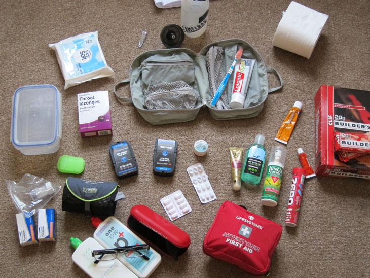

A lot of the stuff I chose to take on recommendation from books and other sources (as well Adventure Co’s website)
Clockwise, from top left:
- wet wipes (amazing for when there’s no hot water to shower)
- nail clippers
- supplementary water bottle (approx 700ml)
- toiletries bag (keeps all your shit together)
- toothbrush and toothpaste
- toilet roll (with tube removed)
- protein bars
- antiseptic cream
- antihistamine
- electrolyte water supplement tablets
- mosquito spray
- liquid dry soap
- sunblock
- first aid kit
- high factor sunblock
- paracetamol and nurofen
- chlorine tablets
- glasses and contact lens stuff
- microfibre travel towel
- travel soap
- throat lozenges
- container
Afterthoughts:
Quite a few of these items were never used, but I think I would take them anyway, just in case. The only thing that was truly useless was the soap I had bought - little sheets of ‘paper’ soap which dissolved in water just melted into a huge messy blob as soon as you handled the box with wet hands. Take a small bottle of normal liquid soap instead.
Don’t bother washing your clothes yourself on the trek - chances are, they won’t have enough time to dry overnight in the cold temperatures.
I managed to sprain my knee on the return journey, what with all the hillwalking. It was painful enough that I had to borrow a walking pole and take painkillers. I also used a tubular support bandage and some heat rub ointment (which you can get at any pharmacy). Never having had any problems with my knees before, this was a bit of surprise - if my team mates didn’t have these various items to help me, it would’ve been very hard going (thanks guys!).
Round about our first time into Namche, my contact lens stuff started getting real cold when left overnight to clean/soak. They never actually froze, but I hadn’t bothered to take them out (of my eyes) on the coldest nights (my lenses are pretty good for leaving in overnight). The water out there isn’t the cleanest, so it’s important you take hand sanitiser with you and maybe rinse your hands with your actual lens solution before handling your eyeballs (most hand sanitisers contain alcohol and other chemicals).
Another handy little creature comfort which one of my team let me have was a chemical hand warmer. Quite nice to just have in your pocket to hold onto on the coldest days (or maybe even stick down your boots). Rechargeable ones are available, which you have to boil - not a luxury you can count on. Stick to the disposable variety.
When you’re cold and tired, there’s nothing quite like a chocolate bar to cheer yourself up. As well as protein/energy bars (not much meat to be had up on the mountains), take regular sweets and chocolates. You can buy this sort of thing out there as well, but it’s going to be more expensive (I think prices go up to two or three pounds for a regular Snickers/Mars bar). Don’t overlook these little luxuries when you’re wet and miserable from walking all day - awesome for morale.
For water purification, I took generic chlorine tablets. I didn’t even notice the taste difference, or cared. Consider how much water you need to drink per day - I drank up to five litres a day, depending on the weather and the amount of walking. At one tablet per litre, you’re probably looking at about 100 tablets to be safe - these things are tiny, easy to carry and only take about twenty minutes to clean the water.
Some guys in my group had purification droplets, and it looked an amazing amount of hassle - if I had to, I could drop my tablets into my water on the move, whereas they had to sit and wait for minutes inbetween their multi-step process. I saw another guy with a UV purifier (looked like he was sticking a glow stick into his water bottle). I’m a bit dubious about depending on a little gadget like that - if it breaks or the bulb goes, you’re kinda stuffed. Plus it doesn’t look like you can use it easily with a water bladder.
Try to stick with whatever’s easiest and least complicated. When you’re stressed and tired, you want everything to be as straightforward as possible.
Other items to consider:
- More electrolyte tablets
- Deep Heat
- Tubular bandage (in addition to bandage in first aid kit)
- More wet wipes (it’s probably the easiest way to clean out there)
- lipbalm - the sun did horrible things to my lips even with sunblock
- more snacks
- foot/talcum powder - cold, sweaty feet are a sure thing up in the mountains
- Sewing kit
- Dental floss (crazy strong for repairing equipment, apparently)
- Hand warmers